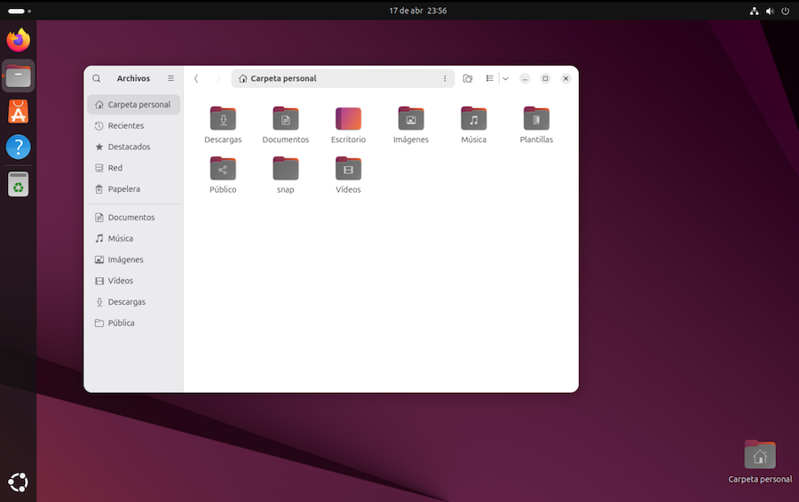

Carpetas en Linux¶
Una vez instalado Linux, antes de hacer nada conviene echar un vistazo al disco duro virtual, para entender como funcionan las carpetas. Si tenemos un Mac, veremos que hay cierta similitud, porque el sistema operativo de Apple, llamado Darwin, es un derivado de Unix BSD. Por el contrario, si venimos del mundo Windows, encontraremos bastantes diferencias.
쮺arpetas o directorios?¶
En la jerga informática, ambas cosas representan lo mismo. En los primeros sistemas operativos el término correcto era "directorio", pero la popularidad de los escritorios gráficos introdujo la palabra "carpeta", porque es la forma que se usa para representar gráficamente los directorios.
Yo suelo utilizar ambas denominaciones, aunque me gusta más "carpeta".
Gestor de archivos¶
Cada programa de escritorio proporciona su propio explorador para navegar por la estructura de carpetas. El de Gnome es un programa Gestor de Archivos llamado Nautilus, aunque en el escritorio aparece bajo el nombre de Archivos:

Para abrirlo, en la barra lateral del escritorio (el Dock) encontraremos el icono del programa:
El funcionamiento es similar al que encontraremos en otros sistemas operativos, Windows, etcétera. En principio se muestra la carpeta principal del usuario, que puede contener archivos varios y otras carpetas como Documentos, Música, Descargas, Escritorio, etc.
En la barra superior de la ventana se muestra la ruta de la carpeta actual, y
podemos acudir a otra carpeta tecleándola en esa barra. Para ir al directorio
raíz de todo el sistema, introducir una barra "/" como ruta a buscar.
Podemos crear enlaces a nuestras carpetas favoritas en la barra lateral de la ventana. Basta con navegar por el sistema de archivos hasta encontrar la carpeta que nos interesa, y arrastrarla a la barra lateral, a la posición que se mostrará como "Marcador Nuevo".
Nótese que el explorador de archivos no cuenta con una barra de menú, siguiendo el planteamiento típico de Gnome. En su lugar, hay que pulsar en los iconos desplegables de la barra superior de la ventana.
Si queremos más información sobre esta aplicación, visitar página web de Nautilus.
Archivos ocultos¶
En los sistemas operativos derivados de Unix, como es el caso de Linux y Mac,
para marcar un archivo como oculto tenemos que modificar su nombre, anteponiendo
un prefijo consistente en un punto. Por ejemplo, .miarchivo.txt se considerará
como oculto.
En principio el gestor de archivos no muestra los elementos ocultos, salvo que activemos su visualización pulsando en el menú que hay a la derecha de la barra de cabecera de la ventana y seleccionemos Mostrar Archivos ocultos.
Permisos¶
Linux es un sistema operativo heredero de Unix, que fue concebido para grandes instalaciones con múltiples usuarios y grupos de usuarios compartiendo documentos. En un ordenador personal esto puede parecer algo excesivo, pero así es como funciona.
Cada usuario pueden pertenecer a uno o varios grupos. Todo archivo tiene:
- un usuario propietario
- un grupo propietario
A un archivo puede acceder:
- su usuario propietario
- los usuarios del grupo propietario
- el resto de usuarios
Y cuando accedemos a un archivo podemos hacer tres cosas:
- lectura: examinar su contenido
- escritura: modificarlo
- ejecutarlo como programa. Por ejemplo, un archivo de textos con comandos a ejecutar. A esto se le llama un script. Veremos los comandos en un capítulo próximo.
Combinando todo esto, tenemos nueve permisos para un mismo archivo:
- Permisos de lectura, escritura y ejecución para el usuario propietario
- Permisos de lectura, escritura y ejecución para los usuarios del grupo propietario
- Permisos de lectura, escritura y ejecución para el resto de usuarios
Para cambiar los permisos, podemos abrir el explorador de archivos, seleccionar el fichero en cuestión, y pulsar sobre el mismo con el botón secundario del ratón. Seleccionar Propiedades y seguidamente en Permisos.
Los permisos tienen diferente significado cuando se trata de un archivo o de una carpeta:
-
Archivos
- lectura: el fichero puede leerse y mostrarse en pantalla
- escritura: el fichero puede modificarse
- ejecución: el fichero puede ejecutarse como programa.
-
Directorio
- lectura: el contenido puede examinarse
- escritura: podemos añadir o suprimir ficheros
- ejecución: podemos situarnos en ese directorio
La diferencia entre situarse en un directorio y examinar su contenido tiene más sentido cuando trabajemos con comandos de Terminal, como veremos en el capítulo siguiente.
Directorios¶
En Windows cada unidad de almacenamiento (disco duro, dvd, unidades USB, etc) tiene por separado su propia estructura de directorios o carpetas, mientras que en los sistemas tipo UNIX, como Mac o Linux, existe un único árbol global de directorios. Cuando hacemos referencia a un archivo, no decimos en que disco está, sino en que carpeta. Por ejemplo:
-
en windows haríamos referencia a un archivo de la siguiente forma:
c:\nombrecarpeta\archivo.doc -
mientras que en sistemas tipo UNIX hacemos referencia al mismo archivo como:
/nombrecarpeta/archivo.doc
Véase que no se menciona la unidad de disco en absoluto. El directorio raiz se
representa mediante /, y se asocia al disco principal del sistema.
Los directorios y subdirectorios que "cuelgan" de la carpeta raiz estarán
ubicados en el mismo disco, a excepción de aquellas carpetas que asociemos
explícitamente a otra unidad.
Si por ejemplo asociamos la carpeta /media/dvd a la unidad lectora de dvds,
el directorio raiz del dvd se corresponderá con esa carpeta. Si en el DVD hay
una carpeta misarchivos, que contiene un fichero llamado texto.doc, este
será accesible:
- en windows, mediante
D:\misarchivos/texto.doc, suponiendo que la unidad lectora de DVD sea laD: - en linux, mediante
/media/dvd/misarchivos/texto.doc
Cuando asociamos una unidad externa a una carpeta, a esto se le llama "punto de montaje". Generalmente, al conectar una unidad a un puerto USB, el montaje suele ser automático, aunque depende de la configuración del sistema.
Nótese que, en sistemas UNIX y derivados, las carpetas se delimitan con un
carácter /. El uso de la barra invertida \ es propio de Windows y viene de
ciertos problemas que tuvieron con el diseño de las primeras versiones del
antiguo sistema operativo MS-DOS.
Un poco de historia
Lo que sucedió es que la versión original de MS-DOS estaba pensada para los primeros ordenadores personales de IBM, que no tenían disco duro. Los archivos se guardaban en diskettes extraíbles. Dada la poca capacidad de estos, no se había pensado en organizar los ficheros en carpetas.
Con la versión 2.0 de MS-DOS se pensó en añadir el mecanismo de directorios,
pero la barra / ya estaba siendo utilizada para otros propósitos. Se usaba
como prefijo de los parámetros de los comandos del sistema operativo.
Microsoft consideró la posibilidad de usar un punto "." como separador,
pero ese carácter también estaba "pillado". Se usaba para separar el nombre
de un archivo de su extensión. Finalmente optaron por la barra invertida "\".
De ahí que Windows se haya convertido en "el rarito". El resto de sistemas
operativos usan la barra "/" como separador en una ruta de directorios.
¡Cuidado!
Linux es case sensitive. Se distingue mayúsculas de minúsculas.
Un directorio o un fichero debe escribirse tal y como lo hemos creado.
Por ejemplo. Documentos y documentos serían dos carpetas diferentes.
Veamos a continuación las principales carpetas de un típico sistema de la familia
UNIX. La estructura completa se conoce como filesystem.
Directorios especiales
La estructura de directorios Linux está inspirada en el antiguo sistema
operativo Unix, aunque cada distribución hace su propia adaptación. En el
caso de Ubuntu, por ejemplo, si instalamos cualquier paquete de Software a
partir de la tienda de snaps, se ubicarán en alguna carpeta llamada
/snaps, o algo así.
Directorio /¶
Toda la estructura de carpetas "cuelga" del directorio raíz, también llamado
root, representado por una barra inclinada /. Todos los contenidos de las
diferentes unidades de almacenamiento cuelgan de aquí.
El directorio / es el punto de montaje del disco principal del sistema.
Directorio /home¶
Es donde los usuarios guardan sus archivos: documentos, fotos, vídeos, música, etc. También incluye la configuración personal del usuario e incluso programas a los que solo él tiene acceso.
Dentro de /home cada usuario tiene su directorio:
- /home/julia
- /home/andres
- /home/pedro
En nuestro día a día, esta es la carpeta con la que vamos a trabajar principalmente.
Es una práctica frecuente asociar /home a una partición de disco separada,
dejando el software y los documentos en particiones de disco diferentes. Pero si
dejamos los documentos en una carpeta compartida de la máquina física, en lugar
de usar el disco duro virtual para este propósito, podemos dejar /home en la
misma partición que el directorio raiz, algo que se hace por defecto en una
instalación estándar de Linux.
Nota: en los ordenadores Mac, el directorio se llama /Users, en lugar de
/home.
Directorio /media¶
Representa el punto de montaje de las unidades extraibles, USB, dvds, etc.
Tradicionalmente UNIX ha utilizado para este propósito la carpeta /mnt, pero
en las distribuciones linux actuales está muy extendido el uso de /media.
Nosotros vamos a utilizar:
/mediapara las unidades extraibles/mntpara acceder a las carpetas compartidas de la máquina física.
Directorio /usr¶
El directorio /usr (User System Resources) se usa para ubicar las aplicaciones que instalemos. Suele tener las siguientes subcarpetas:
- /usr/bin
- /usr/include
- /usr/lib
- /usr/local
- /usr/sbin
- /usr/share
- /usr/src
Directorio /opt¶
Es complementario a /usr, almacenando sobre todo aplicaciones externas que se distribuyen en forma de paquete.
Ubuntu distribuye paquetes en un formato especial, el de la Snaps Store. En este caso se usa el directorio /snap
Directorio /bin¶
Es donde se almacenan los programas básicos de linux.
Directorio /sbin¶
Similar a /bin, pero aquí tenemos los programas relativos a tareas de administración del sistema, que suelen ejecutarse solo con permisos de administrador habilitados.
Directorio /lib¶
Aquí se ubican las bibliotecas necesarias para ejecutar los programas de los directorios /bin y /sbin, así como los módulos del kernel.
Las bibliotecas necesarias para las aplicaciones se guardan en /usr/lib.
Nota:
Una biblioteca (library) es una pieza de software necesaria para complementar el contenido de los programas. Su principal utilidad es la posibilidad de que varios programas compartan las mismas bibliotecas, logrando un ahorro de recursos y un comportamiento homogéneo.
Directorio /boot¶
Es un directorio que almacena todo el software necesario para arrancar el ordenador.
Directorio /root¶
En los sistemas UNIX podemos tener una o varias cuentas de usuario, cada una
con su carpeta /home/usuarioxxx, y una cuenta de administrador para tareas de
administración del sistema, cuya carpeta es /root. Generalmente conviene
trabajar en el día a día solo con permisos de usuario, por motivos de seguridad.
Utilizaremos la cuenta de administrador para instalar nuevo software y realizar
tareas de mantenimiento y configuración.
Directorio /etc¶
Aquí es donde se guardan los archivos de configuración del sistema operativo y de los programas y aplicaciones instaladas.
Directorio /dev¶
Los archivos de esta carpeta son en realidad accesos de bajo nivel a los dispositivos (devices) conectados: disco duro, teclado, unidad USB, etc.
Directorio /proc¶
Contiene información de los procesos y aplicaciones que se están ejecutando en el momento. Realmente no guarda información fisicamente, sino que es una forma de referirnos a los datos de esos procesos.
Directorio /sys¶
Similar a /proc, pero referido a procesos del kernel.
Directorio /tmp¶
Como indica su nombre, sirve para almacenar archivos temporales.
Directorio /var¶
Archivos varios con información de eventos del sistema.